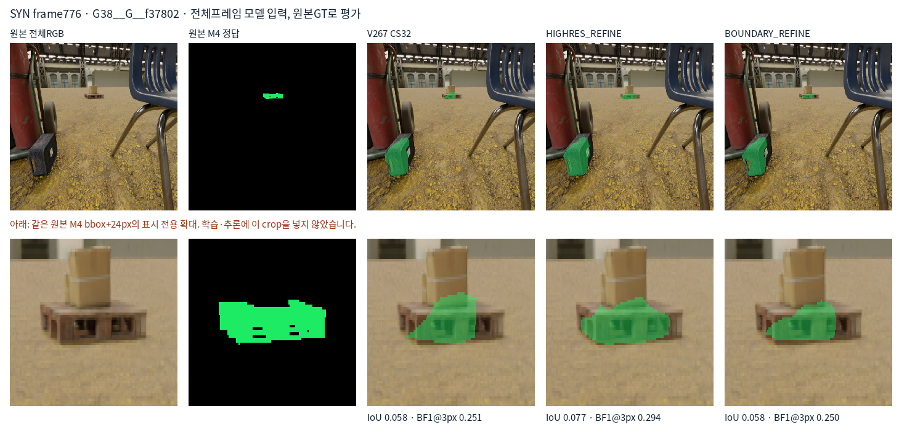
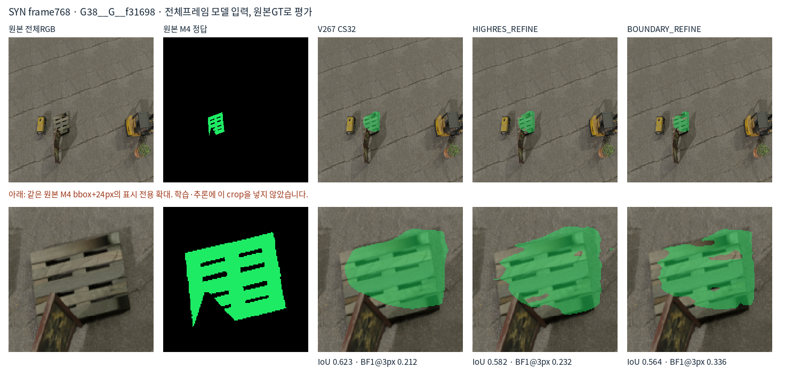
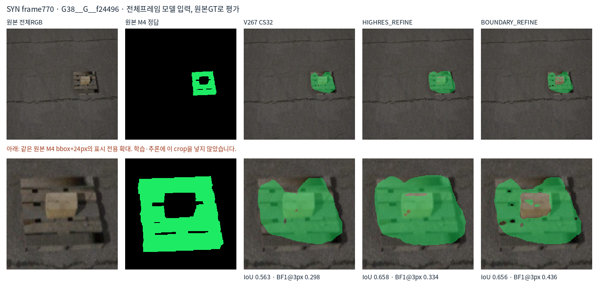
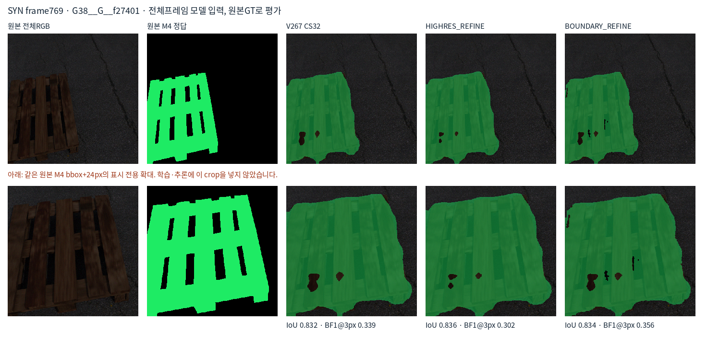
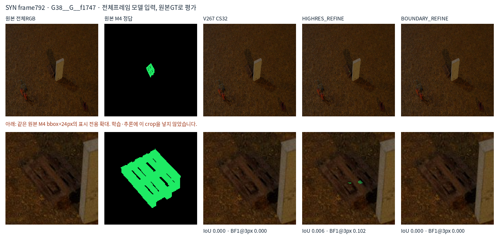
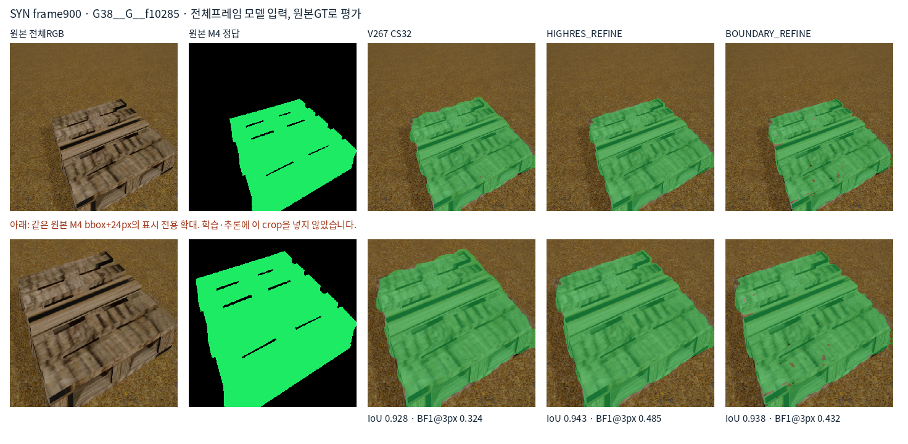

원본 픽셀 GT로 평가했습니다. 전체 이미지가 모델 입력이며, 아래 확대는 표시 전용입니다. 고정1px/3px 경계 허용 오차를 모두 보고하며 모델 선택에 사용하지 않습니다. 실사 분할 정확도를 뜻하지 않습니다.
| 모델 | 원본 IoU | 원본 Dice | 경계P/R@1px | 경계P/R@3px |
|---|---|---|---|---|
| V267_CS32 | 0.6529 | 0.7900 | 0.1625/0.1018 | 0.3203/0.2048 |
| HIGHRES_REFINE | 0.6601 | 0.7952 | 0.1642/0.1156 | 0.3289/0.2350 |
| BOUNDARY_REFINE | 0.6730 | 0.8046 | 0.2194/0.1675 | 0.3991/0.3107 |





